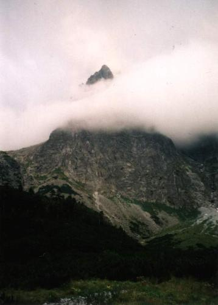

| Kazimierz Andrzej Jaworski
(1897-1973)
W Czarnej Jaworowej
Oto kościół gotycki: zwie się Mała Śnieżna,
igłami ciemnych turni cielska mgieł przeszywa,
rośnie, rośnie ku górze jako moc drapieżna,
aż czub się w chmurze siwej wysoko urywa.
Wokół morze kosówki - zielone i wonne,
a dalej maliniaków martwota wyrasta,
nad którą progi skalne jak mury obronne
niedosiężnej warowni, kamiennego miasta.
A oto zagubiony w tej samotni człowiek
chce utrwalić na kartce popołudnie letnie.
Na próżno się wysila, bo nikt się nie dowie,
jak młodo bije serce mu czterdziestoletnie. |

"igłami ciemnych turni cielska mgieł przeszywa..."
Mała Śnieżna Turnia widziana z Doliny Czarnej Jaworowej
|